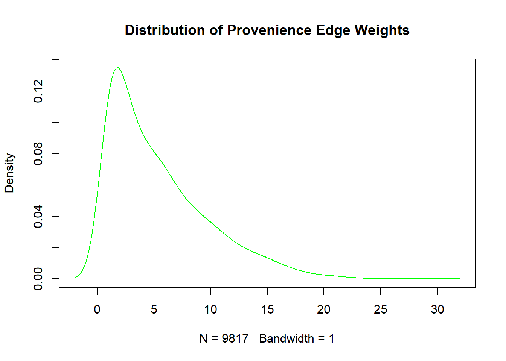

require(tidyverse)
require(igraph)
require(ggraph)Bipartite Graphs for Archaeological Assemblage Networks (Part I)

I’ve occasionally been asked, especially since I decided to go “all in” by getting another graduate degree1, what data science has to do with archaeology.2 This will be the first of a short series of articles to demonstrate how I’ve been using data, statistics, and such to gain insights into what is a surprisingly convoluted area of research. Basically, while many data scientists are trying to make inferences about the present or future I’ve been finding ways to apply those same methods to understanding the past.
Although I’m using an archaeological example, the methods presented here can be used for any number of research questions in other fields. I’ll be covering some basics of:
Part I – Creating and exploring bipartite and one-mode graphs
Part II – Similarity measures for sets and graph adjacency,
Part III – Graph structure and community detection methods,
Part IV – Geo-spatial networks
I’ll be using R for the coding, but all of this could be done in Python just as easily.
Introduction
An archaeological site consists, in essence, of a discretely-bounded spatial area of interrelated artifact deposits and features.
Less formally – it’s old stuff scattered across a place where someone did something. It’s a big jigsaw puzzle in many ways. Imagine that you had a photograph (a physical one, not one of those newfangled digital thingies). You don’t know who is in the photograph or quite what they’re doing in it.
Now imagine that someone had torn that photo into hundreds or thousands of irregular pieces…
then threw away at least half of them…
then scattered the remaining pieces across an open field exposed to the elements…
which was then trod on for a few centuries by various livestock, people, and critters…
and someone later comes along and builds their new house or road or parking lot on top of them!
What would be left over from all of that would pretty be much the data that we poor archaeologists have left over to make sense of that picture.
The job of the archaeologist is to find patterns within those data that make sense of what happened in that location over time. We want to find out what that something was that they were doing, which often tells us a bit about just who those someones in the past were. We do this by digging very precisely controlled sample excavations across the area of a site, and then try and infer the overall spatial distributions of different sorts of artifacts from those samples.
The Structure of Archaeological Data
As an archaeologist and a data scientist (in no specific order), my job is to take the data from those excavated samples and see if I can find – and quantify – those patterns.
So, the first part of trying to do all that is to see whether or not there is a pattern to what stuff is found together and which places contain the most similar stuff in them.
More formally, we are trying to find subsets within a system of sets consisting of a set of locations and a set or artifacts. I wrote an article a few years ago (Cardinal 2019), which went into great detail about the nature of that place-thing system of sets. It all boils down to something that looks rather like this:
\[ \begin{aligned} \left(\mathcal{A}_i,\mathcal{C}_i\right) = \left\{\vphantom{\biguplus_{i}^n}\right.{} &\left.{}\exists \mathcal{X}_i \in^{m(x)} \wp(\mathcal{S}) - \emptyset, \right.{}\\ &\left.{}\exists \mathcal{Y}_i \in^{m(y)} \wp(\mathbb{V}) - \emptyset \right.{}\\ &\left.{} \mid\mathcal{X}_i \approx \biguplus_{j=1}^n \mathcal{V}_j \in^{m(y)} \mathcal{Y}_i\right\} \end{aligned} \]
Not overly user-friendly, I’ll admit. Trust me, it makes sense (eventually) if you read my article?
In graph terminology, what we’re looking for are either discrete sub-graphs or communities (i.e., induced sub-graphs or “cliques”) across two graphs simultaneously – one of places and one of artifact types. In other words, a two-mode (or “bipartite”) graph.
For those unfamiliar, a two-mode graph is one in which there are two mutually exclusive types of vertices (i.e., nodes) and edges can only exist between vertices of different types. In this case, we have places and we have things.
For now, we only want to know which things most often occur in the same place and which places contain similar things. The observable relationships between artifacts are indicated by their co-locations (i.e., presence within the same proveniences). In the broader sense, though the goal is to look at why those artifact turn up together – are they from the same time period, do they reflect a specific type of activity, are they from one or more households, et cetera. The answers to those questions aren’t observable, but locations and co-locations of artifacts are.
The data used in the following example is from an actual archaeological site (a collection of household structures, occupied circa mid-18th to 20th century) and not a toy example or simulated data. As such, it is as messy as real-world data tends to be – the groups of artifacts and proveniences do not cleanly cluster or sort out into neat divisions, but (spoiler alert!) there really are clusters present both in spatial organization and assemblages. We’ll be walking through a part of the process that I used to find and evaluate those sorts of patterns.
Making a Bipartite Graph in R
We can create a bipartite graph quite easily with the package igraph, although it doesn’t really have much in the way of methods for analyzing two-mode graphs directly. For our purposes, that isn’t much of a problem as we’re mainly interested using it as a way to get at each one-mode graph (i.e., places and things separately).
The packages we’ll be using are igraph (to create, manipulate, and analyze the graphs), tidyverse for data frame management, and ggraph for visualizations. There are, of course, other packages that could work as well. These are just the ones I’ve been accustomed to using.
To start we’ll import the data from our text file, which is the database of the artifact catalog. In it is listed details about each artifact type that was found at each of the locations (called a “provenience”). We don’t really need the details about each artifact type for now as we’re only looking for the associations, so we only really need two fields – the provenience (LEVEL_ID) and the artifact type code (CODE).
dat <- read_csv("Catalog_SiteA.csv",
col_select = c(LEVEL_ID, CODE)
)Next we create our two-mode un-directed graph (assemblages_bpg) with graph_from_data_frame using unique pairs of LEVEL_ID and CODE in the data frame dat.
It’s an un-directed graph since there isn’t any real meaning to an ordering or hierarchy of the vertices. The relationship is bi-directional – a place contains things, and the things are equivalently found in that place. To keep things simple, we’ll be creating an un-weighted bipartite graph that ignores multiplicity (i.e., how many of each artifact type is found at each provenience). For now, we’re only going to look at co-presence or co-location of types.
Then we use the method bipartite_mapping to assign type to the vertices based on which of the two columns the node is from.
g_assemblages_bpg <-
graph_from_data_frame(unique.data.frame(dat),
directed = FALSE
)
V(g_assemblages_bpg)$type <-
bipartite_mapping(g_assemblages_bpg)$type
g_assemblages_bpg %>%
ggraph(layout = "bipartite") +
geom_edge_link(color = "gray", alpha = 0.25) +
geom_node_point(aes(color = type), size = 2) +
scale_color_manual(
values = c("green", "blue"),
name = "Node Type",
breaks = c(FALSE, TRUE),
labels = c("Provenience", "Artifact")
)Now we have our graph of connections between artifact types and locations, and can already see some rough grouping in each of the vertex types (one type at the top and one at the bottom of the plot). The graph is densely connected, with many nodes and edges.
Lets take a quick look at the bipartite igraph object itself:
g_assemblages_bpgIGRAPH 61efd81 UN-B 403 2533 --
+ attr: name (v/c), type (v/l)
+ edges from 61efd81 (vertex names):
[1] 1726--UDB 1725--UDB 1726--TOOT 1725--TOOT 1726--CS 1725--OCH
[7] 1726--BNUT 1726--UIS 1725--UIS 1725--TWN 1726--UWN 1726--MCN
[13] 1725--MCN 1725--UCN 1726--UCN 1726--CWN 1726--BLT 1725--CAP
[19] 1726--SCR 1725--TACK 1726--TACK 1726--WAS 1725--CF 1725--OPOP
[25] 1726--AXE 1726--STOL 1726--ODMT 1726--UTI 1726--XI 1725--XI
[31] 1726--XSV 1725--XSV 1726--OBS 1725--OTSW 1726--OTSW 1726--XY
[37] 1726--OBR 1726--AFG 1725--AFG 1726--CFG 1726--GB 1726--CPTG
[43] 1726--CTG 1726--CCG 1725--CCG 1726--CVCG 1726--ABG 1725--CBG
+ ... omitted several edgesThe text at the top IGRAPH 2ea26e5 UN-B 403 2533 -- tells us that it’s un-directed (U), nodes have a name attribute (N), is un-weighted (-), and is a bipartite graph (B) that has 403 vertices and 2,533 edges. In the listed preview of edges, you’ll see number and text pairs (e.g., 1726--UDB) that are combinations of the numerical provenience (LEVEL_ID) and textual artifact type code (CODE).
We can easily retrieve the incidence matrix with (shock!) the method as_incidence_matrix and take a peek of the first few rows and columns…
assemblages_inc <- as_incidence_matrix(g_assemblages_bpg)
assemblages_inc[1:5, 1:15] UDB TOOT CS OCH BNUT UIS TWN UWN MCN UCN CWN BLT CAP SCR TACK
1726 1 1 1 0 1 1 0 1 1 1 1 1 0 1 1
1725 1 1 0 1 0 1 1 0 1 1 0 0 1 0 1
1306 0 0 0 1 0 1 0 1 1 1 1 0 0 0 1
1307 0 0 0 1 0 1 0 0 0 0 1 0 0 0 0
1737 1 0 0 0 1 1 0 0 1 1 1 1 0 1 0It’s simply a binary two-mode contingency or two-mode adjacency table showing the presence (1) or absence (0) of an artifact type at each location.
Projecting each mode for analysis
Analyzing bipartite graph metrics directly is somewhat complicated, since the most common metrics for graphs (e.g., centrality measures, etc.) are skewed by the inclusion of both types of vertices and the dependencies between them. What can do more easily is project a weighted graph of each mode, and then analyze those.
Again, igraph makes this easy. We use the method bipartite_projection with the setting multiplicity = TRUE in order to create weighted graph projections for each mode. Since our goal is to associate proveniences that have the most commonality of artifact types and types that show up most often together, we need those multiplicities.
assemblage_projections <-
bipartite_projection(g_assemblages_bpg, multiplicity = TRUE)
assemblage_projections$proj1
IGRAPH 709165c UNW- 152 9817 --
+ attr: name (v/c), weight (e/n)
+ edges from 709165c (vertex names):
[1] 1726--1725 1726--1737 1726--1738 1726--1744 1726--1746 1726--1730
[7] 1726--1727 1726--1760 1726--1765 1726--1761 1726--1769 1726--1826
[13] 1726--1822 1726--1794 1726--1807 1726--1836 1726--896 1726--899
[19] 1726--1763 1726--1745 1726--1747 1726--1750 1726--1755 1726--1753
[25] 1726--1754 1726--1756 1726--1752 1726--1757 1726--1758 1726--1762
[31] 1726--1815 1726--1816 1726--1779 1726--1780 1726--1778 1726--1797
[37] 1726--1799 1726--1806 1726--1805 1726--1804 1726--1829 1726--1830
[43] 1726--1837 1726--1838 1726--1839 1726--1841 1726--1842 1726--888
+ ... omitted several edges
$proj2
IGRAPH 709168b UNW- 251 9494 --
+ attr: name (v/c), weight (e/n)
+ edges from 709168b (vertex names):
[1] UDB--TOOT UDB--CS UDB--BNUT UDB--UIS UDB--UWN UDB--MCN UDB--UCN
[8] UDB--CWN UDB--BLT UDB--SCR UDB--TACK UDB--WAS UDB--AXE UDB--STOL
[15] UDB--ODMT UDB--UTI UDB--XI UDB--XSV UDB--OBS UDB--OTSW UDB--XY
[22] UDB--OBR UDB--AFG UDB--CFG UDB--GB UDB--CPTG UDB--CTG UDB--CCG
[29] UDB--CVCG UDB--ABG UDB--CBG UDB--GBG UDB--MBG UDB--NBG UDB--OBG
[36] UDB--FOSS UDB--OCI UDB--OCO UDB--OSL UDB--TARP UDB--OCH UDB--TWN
[43] UDB--CAP UDB--CF UDB--OPOP UDB--ORUB UDB--BIF UDB--RN UDB--URN
[50] UDB--UN UDB--ALUM UDB--UNZ UDB--ACG UDB--MLCG UDB--CVBG UDB--WOOD
+ ... omitted several edgesYou’ll see that we now have the two one-mode graphs as $proj1 for proveniences and $proj2 for artifact types. All that is left is to assign these projections to their own individual one-mode graph.
g_assemblage_prov <- assemblage_projections$proj1
g_assemblage_artifact <- assemblage_projections$proj2Let’s take a look at the resulting graph projections.
g_assemblage_prov %>%
ggraph(layout = "fr") +
geom_edge_link(aes(alpha = weight)) +
geom_node_point(color = "green", size = 2)g_assemblage_artifact %>%
ggraph(layout = "fr") +
geom_edge_link(aes(alpha = weight)) +
geom_node_point(color = "blue", size = 2)Both graphs are obviously quite dense, and at this point it’s somewhat hard to tell if there are any patterns or communities within them. We’ll need to explore them a bit to find out what all of those connections are telling us.
Note
Now that we have our two one-mode graphs projected, you may be wondering – why go through the trouble of making a bipartite graph in the first place? There are a couple of reasons.
The first is that the relationships and associations we’re looking for are specifically the interactions between the two entities. Conceptually, that should make a certain sense. The archaeologically observable associations between artifact types are primarily by co-location. Similarly, proveniences are associated because they contain similar artifact types. These associations are themselves bipartite in nature, so by initializing our graphs by that relationship is simply the correct way to address them.
Secondly, it’s just an elegant way to go about it. We could, of course, have gone about building the individual graphs from the source data table by building pivot and contingency tables then converting those into adjacency matrices and graphs. By building it this way, however, we collapsed a whole bunch of steps and built both of our graphs with a few of lines of really straightforward code! As an added benefit, we can just as easily pull out those individual contingency tables and such just like we did with the incidence matrix at the start. Why make extra work?
Analyzing the Projected Graphs
If you noticed above, both of our one-mode graphs are quite dense. For example, the provenience graph G_assemblage_prov has 9,817 edges but only 152 vertices? The maximum number of edges possible in an un-directed graph is \(\frac{1}{2} \times |V| \times (|V|-1)\), so with 152 vertices the most possible edges is 11,476 and our graph has a density of ~86%.
We’ll start by looking at the density distribution of the degrees of our vertices, or how many other vertices each one is connected to.
plot(density(degree(g_assemblage_prov)), col = "green",
main = "Distribution of Provenience Degree")We see from the left-skew of the distribution that most of the vertices are actually connected to most of the other vertices. If that’s true, then there really wouldn’t be any differentiation to be made between proveniences (i.e., no community structure) and the 86% density just indicates a relatively homogeneous site.
Now, let’s look at the distribution of weights for those edges.
plot(density(E(g_assemblage_prov)$weight, bw = 1), col = "green",
main = "Distribution of Provenience Edge Weights")
Here we see the opposite – the distribution is right-skewed, meaning that the vast majority of our edges are being formed by weak similarities (i.e., having only a small number artifacts in common).
So now we know why our provenience graph is so dense – if it only takes one or more artifacts in common to connect two locations, and most proveniences have at least one in common, then everything is pretty well connected.
Maybe certain artifact types are just showing up in many places? We need to find a way to thin out the graph such that only the really meaningful connections form edges.
Let’s look at our artifact graph G_assemblage_artifact next. It’s not quite as dense (251 vertices, 9,494 edges out of a possible 31,375, so ~30%), but we’ll again look at vertex degree and edge weight densities.
plot(density(degree(g_assemblage_artifact)), col = "blue",
main = "Distribution of Artifact Degree")Here we see a somewhat right-skewed degree density distribution, but most are rather strongly connected (~50+ connections) and notice the “bumps” toward the right tail – it seems that at least some of our artifact types do show up alongside most others.
plot(density(E(g_assemblage_artifact)$weight, bw = 1), col = "blue",
main = "Distribution of Artifact Edge Weights")The artifact edge weights are heavily right-skewed, and notice just how far that right tail extends. What that is telling us is that some, but not many, of the artifact types are showing up in a lot of locations. Most artifact types are only co-located in a fairly few (~3-4) proveniences, though.
Interpretation of degree and edge weights
We now have a rough idea of what is going on in our system of place-thing sets:
Both of the individual projection graphs are dense, but most of those connections are weak.
It seems likely that a relatively small number items in each set are generating those weak connections. Certain artifacts show up in a large number of provenience, and some provenience contain a large and diverse set of artifact types.
These weak-but-dense connections may be masking or overwhelming the underlying structure in the graphs.
What we need to do next is to find a way to distinguish between informative connections and spurious connections.
The Next Steps…
One might think that the obvious next step would be to simply start removing the weakest edges, and in some cases that would be the way to go. Remember, though, that our goal is actually to analyze the relationships (i.e., the connecting edges) between artifacts and locations. The strength of individual vertices aren’t the objective, but rather we want to identify communities of vertices derived from their relationships.3
What’s happened is that the method we’ve used to project the one-mode graphs is simply tabulating the number of times an individual provenience and artifact type coincides. The problem is that one shared artifact can connect locations, and one shared location connects artifacts. That’s not quite what we’re after. We want to link vertices that have the most similar collections or profiles of co-occurrence. In other words, we need to look at both the intersections of the sets and their differences to ascertain similarities.
For that, we need a different method of projection. In the next installment, we’ll look at some set-based measures of similarity and see what happens when we project our one-mode graphs that way.
References
Cardinal, J. Scott. 2019. “Sets, Graphs, and Things We Can See: A Formal Combinatorial Ontology for Empirical Intra-Site Analysis.” Journal of Computer Applications in Archaeology 2 (1): 56–78. https://doi.org/10.5334/jcaa.16.
Footnotes
Georgia Institute of Technology Master of Science in Analytics from the College of Computing, Scheller College of Business, and College of Engineering. I highly recommend the program!↩︎
I’m also sometimes asked the inverse – what does archaeology have to do with data science – by my archaeological colleagues as well. Quantitative and computational (or “digital”) archaeology has been around for a long while, but we’re still something of a minority. That’s a subject for a different post, though.↩︎
Readers versed in graph theory may already notice that we’re ultimately aiming for edge betweenness and centrality metrics.↩︎